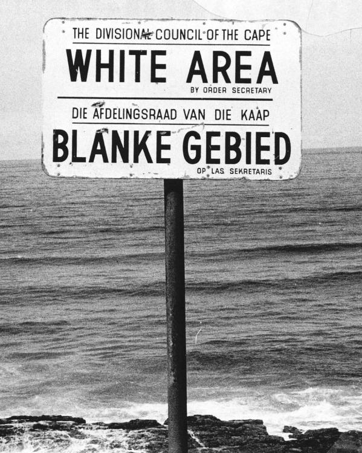

I Born a Crime av Trevor Noah presenteras temat identitet och etnicitet genom Trevors uppväxt under Apartheid i Sydafrika. Trevor är barn till en svart mamma och en vit pappa, vilket var olagligt under apartheid. Därför känner han ofta att han inte riktigt hör hemma i någon grupp. Ett exempel är när han skriver “I was born a crime.” Det visar hur raslagarna påverkade människors identitet och liv. Trevor Noahs budskap är att ras och identitet ofta bestäms av samhällets regler, inte av vem man egentligen är. I Robinson Crusoe av Daniel Defoe presenteras temat identitet och etnicitet genom huvudpersonens liv på ön och hans relation till mannen han räddar, som han kallar Friday. Crusoe tar kontroll över ön och lär Friday engelska och kristendom, vilket visar hur europeisk kultur framställs som överlägsen. Ett exempel är när Crusoe ger honom namnet “Friday”, vilket visar att han bestämmer över hans identitet och roll. Detta speglar idéer kopplade till Colonialism. Författarens perspektiv visar hur många européer under den tiden såg sin egen kultur och makt som naturlig och självklar. Båda böckerna visar hur samhället fördelar makt, ojämnlikhet mellan olika grupper.
